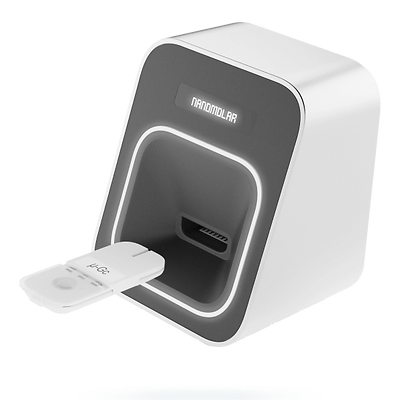

Accelerating dental biomaterials development with neural-network strategies
A new study from the group shows how artificial neural networks can predict key biomaterial properties from composition alone — accelerating the path from hypothesis to validated material.

A paper from A/P Rosa’s group published in 2025 demonstrates how artificial neural networks can be deployed to accelerate the development of dental biomaterials. The study trained predictive models on existing experimental datasets to estimate key material properties — including mechanical performance, ion release profiles, and biological response indicators — from composition and processing parameters. The approach reduces the experimental burden typically associated with iterative material optimisation, which in dental biomaterials can involve dozens of formulations and weeks of laboratory work.
Rather than replacing experimental science, neural-network strategies function as a first-pass screening tool: identifying promising formulations from large compositional spaces before laboratory validation. The study demonstrates the approach on calcium silicate-based bioactive cements — a material class in which the group has deep experimental expertise — showing that models trained on relatively modest datasets can achieve predictive accuracy sufficient to guide formulation decisions.
The algorithm explores the compositional space; the scientist decides what matters.
The integration of machine learning and materials informatics into dental biomaterials discovery is one of the most active research frontiers in the field. By combining high-throughput experimental data with predictive modelling, researchers can narrow the space of candidates that require physical synthesis and testing, compressing development timelines significantly. This work positions the group at the intersection of data science and materials chemistry — a convergence that is reshaping how new dental materials are discovered.